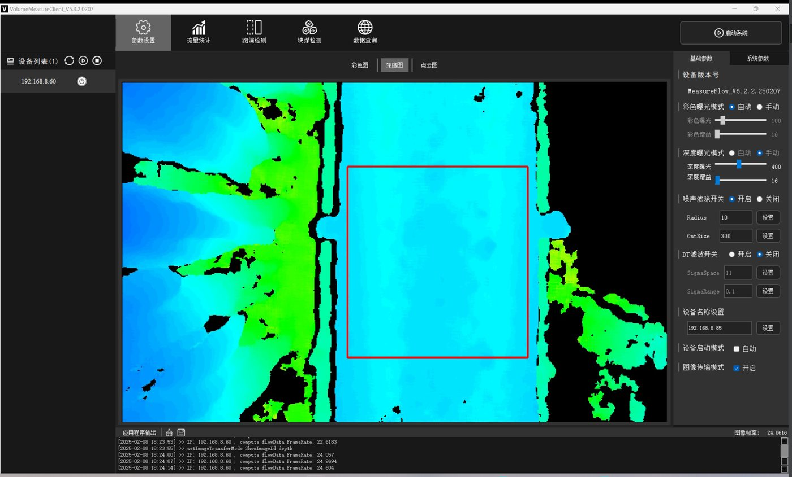

客流统计项目需要关注的问题不是设备装错了，而是三个月后各部门拿着同一套数据得出完全不同的结论。运营说客流涨了，店长说没感觉，财务算出来的转化率和市场部的对不上。追到最后往往发现，大家对"一个客流"的定义从来没有统一过。
这篇文章讲两件事：技术上双目方案输出的到底是什么，以及在装设备之前必须先书面确定哪些口径。前者决定系统能力边界，后者决定数据能不能被信任。
一、四个层级：感知、计数、空间指标、身份识别
"摄像头"这个词把四件性质完全不同的事混在了一起。把它们分开，才能准确回答"你们会不会拍到我的脸"这类问题——这个问题需要在门店、写字楼与政企项目沟通中明确。
左右两个镜头利用视差重建深度。这一步产生的是"某个位置有一个多高的立体物体"，用于区分人、推车、影子与海报。深度图在设备内部处理，不需要离开设备。
在设备端判断目标越线方向、拼接同一目标在视场内的移动轨迹。轨迹只在设备内短暂存在，用于判断"这是同一个人的一次进入"，不用于跨时间或跨设备关联。
上传的是数字：某时段进入 N 人、离店 M 人、某区域平均停留 T 分钟。这一层是平台看到的全部内容，也是所有分析的输入。
识别"这是谁"、建立个人到店档案、跨门店关联同一个人的行为——这些属于另一类系统，本方案不做，也不应该被当作"顺便可以加上"的功能。
这个四层划分在对外沟通时非常有用。当物业、租户或员工代表问起隐私问题时，可以直接回答：系统在第 1 层感知、第 2 层计数、第 3 层输出数字，第 4 层不做。这比一句"我们很重视隐私"有说服力得多。
二、为什么是双目，而不是单目或红外对射
客流统计有多种技术路线，各有适用场景。选择双目通常是因为它在"精度"和"不采集身份信息"之间取得了可接受的平衡。
这张表里第三行需要单独说明。Wi-Fi 与蓝牙探针在成本上有明显优势，一台设备可以覆盖很大范围，也不需要精确的安装位置，因此在不少方案里被当作低成本替代品推荐。但它采集的是设备的无线标识，这在性质上属于与个人相关的数据——即使做了哈希处理，它仍然是"同一台设备"的标识符，因此可以跨时间、跨门店关联。这与双目方案"只输出数字"的性质完全不同。如果项目所在场景对个人数据有明确要求，探针方案的合规成本会远高于它省下的硬件成本。
另一个常被低估的是红外对射的局限。其结构相对简单，可结合低客流窄门场景评估适用性，仍需按设备和现场条件安排维护。但一旦门口出现并排通行、推车、或者带小孩的顾客，可能出现漏计，影响数据与趋势判断。判断能不能用对射，标准不是预算，而是"门口会不会出现两个人并排走进来"。
双目的代价在安装：它对高度和角度的要求比其它方案严格。层高不足、门头有雨棚遮挡、或者只能装在侧墙而非正上方，都会让精度下降。这些约束在报价单上看不出来，只能靠现场勘测确认——这也是为什么勘测在客流项目里不是可选项。

三、口径没定清楚，后面所有分析都会吵架
这一节用于明确各方的数据口径。下面这七个问题必须在装设备之前书面确定，并且要有一份各方都签字确认的口径文档。它们没有标准答案，但必须有一个统一答案。
员工算不算客流？不排除，早晚班交接会形成虚假高峰；要排除，就需要设定身高区间之外的额外规则或在排班时段做校正。多数项目选择用统计时段规避，而不是试图识别员工。
儿童算不算？有效身高下限设在哪里，直接影响母婴、玩具与教育类业态的数据。设成 1.2 米还是 0.8 米，会得出完全不同的客流量。
折返算几次？顾客出门接电话再进来，是一次还是两次？多数场景会设一个冷却时间窗（例如几分钟内的重复进入合并为一次），这个窗口长度必须写进文档。
多个入口怎么合并？三个门各装一台设备，总客流是三台相加吗？如果顾客从 A 门进 B 门出，相加会重复计算。需要明确是按"进入总数"还是"去重后的到店人数"。
"停留"从什么时候开始算？进入区域即计时，还是停下超过 N 秒才算？路过和停留的界线由这个阈值决定，直接影响区域热度数据。
营业时间外的数据算不算？保洁、理货与夜间巡查都会产生计数。是按营业时段截取，还是全天统计并另行标注？
和 POS 交易数的比值叫什么？如果分母是"进入总数"，得到的数字和分母是"去重到店人数"完全不同。转化率这个词在两种口径下不能互相比较。
这七个问题的共同点是：它们都不是技术问题，而是业务定义问题。设备的可配置口径需按具体型号和方案确认，并约定统一的数据定义。先定口径再装设备，比装完再来讨论"这个数字准不准"要省事得多。
客流数据的可信度需要结合设备精度、统一口径和现场校准共同评估。一份签字确认的口径文档，比多装两台设备更能决定项目成败。
四、安装：三个决定精度的物理条件
口径定完，接下来是现场。双目设备的精度由三个物理条件决定，勘测时必须逐项确认。
过低会导致视场不足、边缘目标被截断；过高会削弱深度分辨力。层高不足的门店需要提前评估。
门头宽度超过单台设备覆盖范围时需要多台拼接，拼接区的重叠处理要在配置时明确。
雨棚、吊旗、促销堆头与镜面地砖都会干扰。装完之后再改陈列，也会让精度变化。
举一个具体例子说明这三条怎么一起起作用。一家门头净宽 4.2 米、吊顶净高 2.8 米的社区超市，单台设备的视场无法完整覆盖 4.2 米宽的通行面，边缘会留下约半米的盲区——顾客贴着门框走进来就可能漏计。可选的处理方式有两个：一是装两台做拼接，并在配置里明确重叠区的去重规则；二是在地面用陈列或隔断把有效通行宽度收窄到单台可覆盖的范围内。前者成本高一些但不影响动线，后者不花钱但要门店配合改陈列。这个判断必须在勘测时做完，因为它同时影响设备数量与最终报价。
如果同一家店吊顶净高只有 2.4 米，情况会反过来：高度不足时视场进一步收窄，即使装两台也可能覆盖不全，此时更现实的做法是把统计线从门口内移到入口通道稍深处——那里的通行面通常更窄。位置内移会带来一个副作用：站在门口张望但没有真正进店的人不再被计入。这未必是坏事，但必须写进口径文档，否则日后与历史数据对比时会出现无法解释的落差。
最后一条容易被忽视：客流设备的精度不是一次性的。门口换了新的促销堆头、加了吊旗、或者调整了闸机位置，都可能改变视场条件。因此陈列调整后应该复核一次数据是否出现异常跳变，这一条建议写进运维流程。
五、验收：用人工计数校准，而不是看精度标称值
供应商给出的精度数字是在特定条件下测得的，它不能替代你自己门店的验收。可执行的做法是人工对比校准：
校准完成后，把这份对比结果连同口径文档一起归档。后续任何关于"数据准不准"的讨论，都可以回到这份基线，而不是从头再吵一遍。这份文档有助于后续核查与沟通。
六、客流数据怎么和价格、陈列串起来
口径统一、校准完成之后，客流才真正开始产生价值。它自己只是一个数字，只有和别的动作放在一起才能形成判断。下面三条是可结合业务场景评估的组合方式。
电子价签的执行记录里有"什么时候、哪些商品改成了促销价"，客流数据里有"那几天的到店与区域停留"。把两条时间线叠在一起，可以看出某次促销是真的把人带进了店，还是只让已经进店的人多停留了一会儿。这两种情况需要的后续动作完全不同。
陈列调整前后各取两周的区域热度做对比，能看出人流是否真的被引到了目标区域。注意要排除季节与促销因素——如果调整刚好赶上大促，那两周的数据说明不了陈列本身的效果。
把分时客流曲线和实际排班表并排看，常常会发现两者错位——高峰时段人手不足，平峰时段却有人闲着。这类调整不需要新增人力，只需要挪班次，可用于评估排班与客流的匹配情况。
这三种用法有一个共同前提：所有参与讨论的人说的"客流"必须是同一件事。口径文档、校准基线与运维复核，都是为了守住这个前提。守住了，客流数据能同时支撑价格、陈列与人力三类决策；守不住，它就只是一个每天有人报、但没人真正相信的数字。